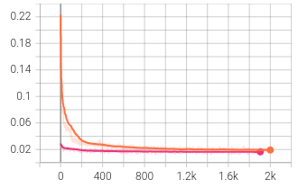
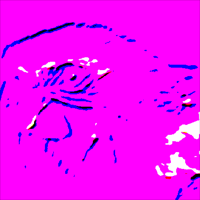
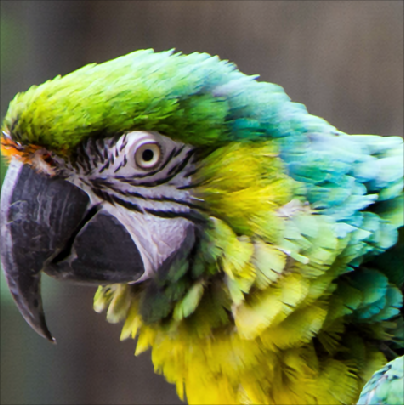
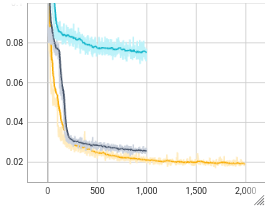
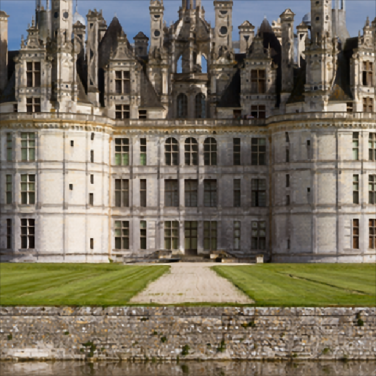
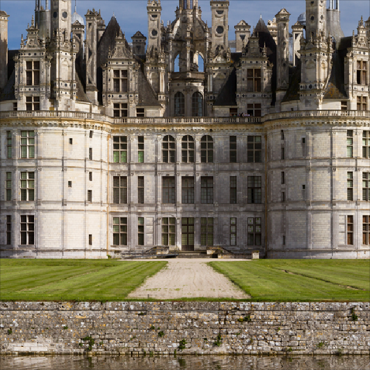

Learning to Upscale Images with a CNN
ETH Zurich · 2023 · Python, PyTorch · 5 min read
Making an image twice as large is easy. Reconstructing its fine details is harder. For an exercise in Mathematical Foundations of Computer Graphics and Vision at ETH Zurich, I implemented and trained a small convolutional neural network for ×2 super-resolution. I then tested how its architecture, learning rate and input preparation affected the results.
The comparison below shows bicubic interpolation and the residual model on the same input. Look around the parrot’s eye and the edges of its feathers. The network produces sharper detail, although sharpness alone does not tell us whether every detail is correct.
Building the training pipeline
The dataset contained high-resolution images. To create matching training pairs, I took random 64 × 64 crops, varied their brightness, contrast, saturation and hue, and reduced them to 32 × 32 with bilinear downsampling. The original crop supplied the target. This let the model see different patches and colour variations across training epochs.
I implemented the architecture specified by the assignment: bilinear enlargement followed by a fully convolutional network. Its 3 × 3 convolutions use 64 internal channels, with ten convolution/LeakyReLU blocks between the input and output layers. The output has three RGB channels.
- 32 × 32Low-resolution input
- 64 × 64Bilinear enlargement
- CNNLearned reconstruction
- L1 lossCompare with the target
For each batch, I computed the mean absolute pixel error, backpropagated it and updated the weights with Adam. TensorBoard tracked the training loss, validation measurements and reconstructed images. The baseline used a learning rate of 1e-4 and ran for approximately 2,000 epochs.
Learning the correction
The baseline network predicts the complete output image. In the residual version, I added the bilinearly enlarged input to the network’s output:
prediction = (
upsampled_image
+ network(upsampled_image)
)
This gives the model a useful starting image and lets it learn a correction. In these experiments, the residual version began with a much lower loss and converged faster. The visual difference was more modest: both models sharpened the image, while the residual model preserved its overall colour more closely in the examples I examined.

The learning rate changes the result
I tested learning rates from 1e-2 to 1e-6. The largest settings produced unstable training and severe colour artefacts. At 1e-6, the model learned too slowly within the available training time; the output remained grey and soft. Of the settings tested, 1e-4 gave the most useful reconstruction.

1e-2 Unstable

1e-4 Useful reconstruction
1e-6 Slow learning

1e-4, grey is 1e-5, cyan is 1e-6. Only the baseline continues to 2,000 epochs.What the network still misses
The model was trained on bilinearly downsampled images. When I changed that preparation step at evaluation time, the results deteriorated, particularly with nearest-neighbour downsampling. The network had learned to work with a particular kind of input degradation. A model intended for real photographs would need training inputs that reflect their blur, noise and compression.


I also varied the colour augmentation settings. Those shorter, 400-epoch runs showed no clear improvement, so I kept the baseline settings. This was a useful exercise in building an entire learning pipeline and inspecting its failure cases. If I revisited it, I would first tighten the evaluation protocol and test more realistic image degradations.
These are archived course experiments from May 2023. The original evaluation accumulated batch metrics and logged 1 − SSIM under “SSIM”; I have therefore omitted its aggregate score table rather than present those values as benchmark averages.